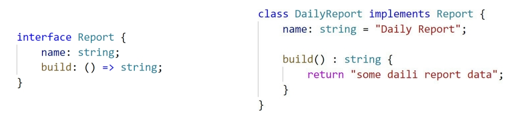

Лекція 2. Класи та інтерфейси
План лекції:
- Класи в TypeScript
- Конструктори
- Модифікатори доступу
- Accessors
- Наслідування
- Використання інтерфейсів
Класи
Клас – це конструкція мови, що складається з ключового слова class, ідентифікатора (імені) та тіла.
Клас може містити у своєму тілі: поля, методи, властивості та конструктори.
Поля – визначають стан майбутнього об'єкту.
Методи – визначають поведінку майбутнього об'єкту.
Конструктор
Конструктор – спеціальний метод, який використовується для ініціалізації екземпляра.
У тілі класу конструктор створюється за допомогою ключового слова constructor.
Під час створення екземпляра класу для виклику конструктора необхідно використовувати
ключове слово new.
Модифікатори доступу
public, private, protected – ключові слова, модифікатори доступу. З їхньою допомогою
визначається видимість елементів класу.
- public – видимий для всіх (у класі та за межами класу);
- private – видимий тільки в межах класу (за межами класу доступ відсутній);
- protected – видимий у межах класу та в класах спадкоємців (за межами класу та класів
спадкоємців доступ відсутній).
Усі члени класів без модифікатора доступу, за
замовчуванням використовують модифікатор доступу
public
Успадкування
Успадкування (Наслідування, Спадкування) (англ. inheritance) - механізм створення класу за допомогою
розширення вже
існуючого класу. Таким чином, ми можемо створити нову функціональність на основі тої, що існує.
Extends – ключове слово, яке визначає який клас буде базовим
(батьківським) для поточного.
Клас-спадкоємець отримує від батьківського властивості та методи
Абстрактні класи
Абстрактний клас - це клас, який може виконувати ролі лише базового класу. Створити
екземпляр абстрактного класу не вийде.
Абстрактний метод - це метод, який не має реалізації в поточному класі, але обов'язково має
бути реалізований у похідному класі.
Абстрактні методи можуть створюватися лише в абстрактних класах.
Інтерфейс
Інтерфейс – спеціальний тип даних, що визначає контракт, якого має дотримуватися певний об'єкт.
